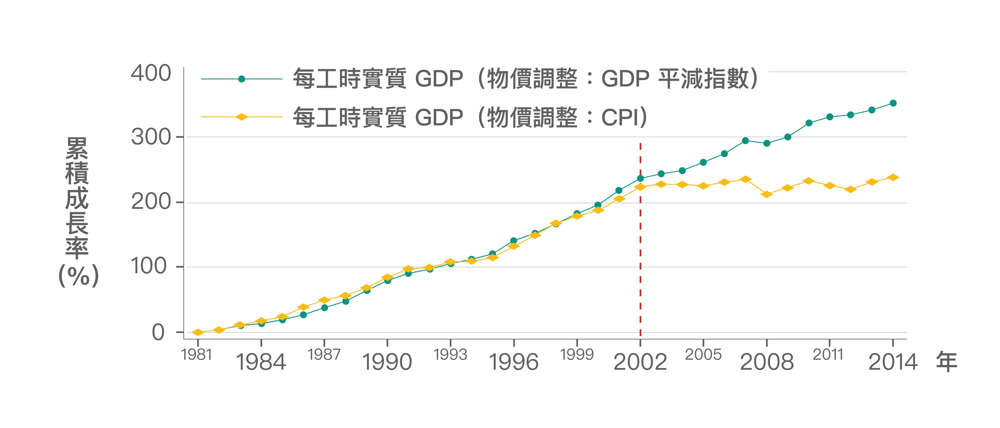
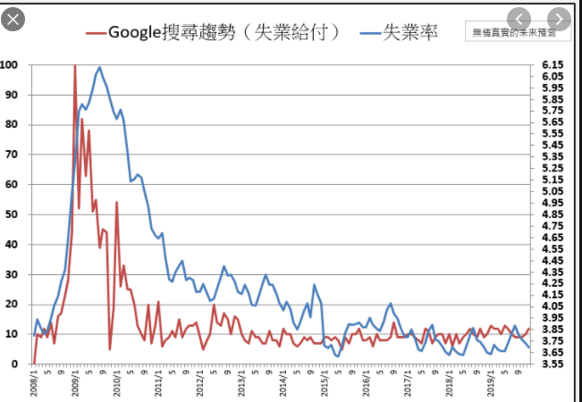
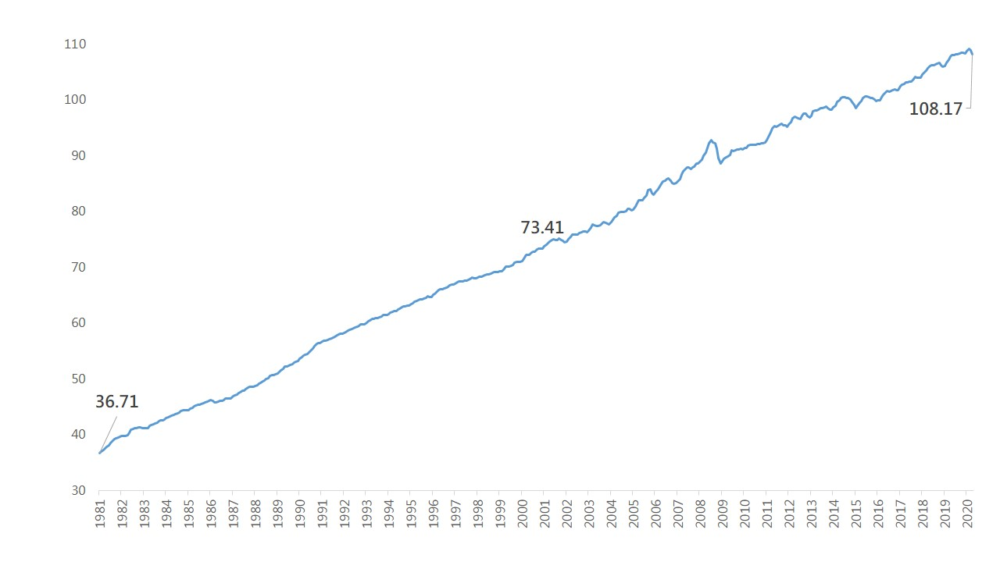

台灣經濟成長勢在必行，大家努力要讓經濟成長，但經濟成說說的簡單做卻難上加難，就像是最近的武漢肺炎疫情，一定影響著整個台灣的經濟發展，究竟它會影響多久，沒人知曉，而電子業占台灣出口的比重超過三分之一。疫情中，許多人突然被迫在家工作，使平板電腦、耳機等商品需求變得更加強勁。帶動台灣出口在全球貿易衰退約10％的情況下，逆勢成長近5％。 |

|
|

|
失業率是每個國家的大議題，如何能降低失業率讓國家中每個人都能養活自己，並且生活的過去，提高薪資對於失業率是否有幫助對於我來說答案是否定的，提高薪資反而可能造成貧窮的人更貧窮富裕的人還是一樣很富裕，想要根本降低失業率，還需要跟有效的政策。 |
物價上漲想必是大家最不希望的，若物價上漲而薪資不變，大家的生活當然是越過越不下去想起在歷史課本上看到以前的通貨膨脹，那個景象真的是我連現在都不敢想像的更別說真的發生在生活中，若物價上漲人民生活品質也跟著上升那當然對於國家來說是再好不過的一件事情了。 |

|